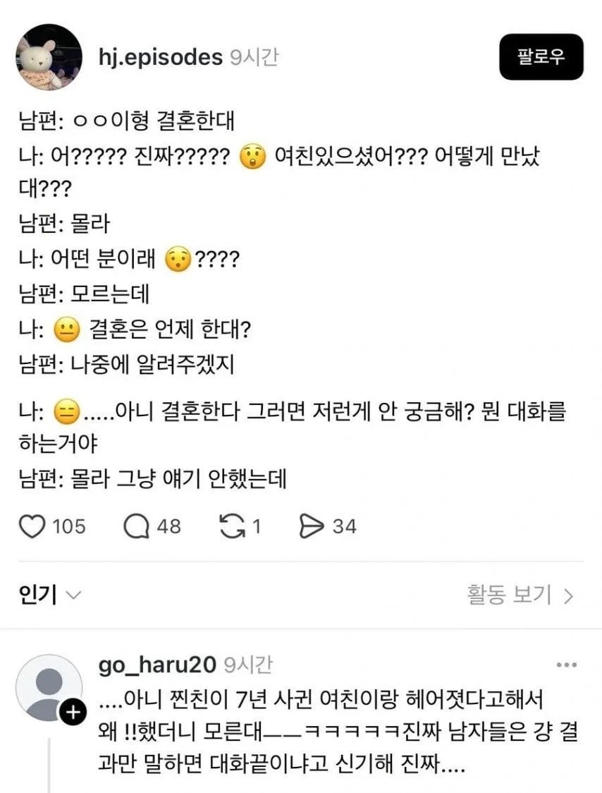

ㅋㅋㅋㅋㅋ 뭐 알아서 잘하겠지, 알아서 잘 말하겠지의 결과랄까여

ㅋㅋㅋㅋㅋ 뭐 알아서 잘하겠지, 알아서 잘 말하겠지의 결과랄까여
그냥 아이고 어쩌다가 하고 상대방이 얘기하면 듣고 같이 얘기하고
아 그냥 헤어짐 이러면 아그래? 술 ㄱㄱ 이러고마는듯
사실 듣는 사람이 안궁금한것도 있지만
남자는 말하는 사람도 잘 안말해주는 사람이 많은 것 같음
그냥 헤어졌다 정도만 얘기하고 이유 물으면 모르겠다, 안맞았다 이런식으로 자세히 얘기 안함 ㅋㅋ
그러다 보니 대화 흐름이 헤어진 썰이 아니라 새로운 여자 썰로 넘어감. 소개팅이라던지 주변 여자라던지 ㅋㅋㅋ
그쪽에서 말할 생각이 있을지 없을지 모르는데 꼬치꼬치 묻는것도 실례지
원래 남자들은 여자친구나 와이프 관련 얘기는 서로 안물어보고 이야기 안하는 게 불문율이야(본능인가) + 타인의 인간관계에 별 관심이 없음, 차나 주식, 부동산 이야기면 모를까
내여자에 대해 자세히 물어보면 뭔가 내여자 탐내는거 같아서 그럴듯 오해사고 싶지도 않고 취조하는것도 아니고 꼬치꼬치 물어보면 그것도 기분나쁘고
불문율이라기보단 별 관심이 없는데
남한테 꼬치꼬치 묻는것도 무례한거라는 인식이 없는거
상대방이 얘기 안꺼내면 굳이 꼬치꼬치 잘 안캐묻는게 남자니까
궁금하면 니가 물어봐
여자들은 남 얘기 뒷담화가 일상 디폴트로 박혀있기 때문임
대체 그 이유를 알아서 니가 뭐에 써먹을건데?ㅋㅋㅋ
여자들끼리 만나서 남 얘기하며 시간보내기 때문이지
뭐 물어봐 그냥 그런갑다 하는거지 시벌ㅋㅋ
여자는 말하고 싶어 하니깐 자세한건 물어 보는거고
남자는 말하고 싶어 하지 않으니 안 물어 보는거지
우리형 결혼한다
와 ㄹㅇ? 언제
ㅇㅇ에 함
우린 언제하냐
몰라 소주시켰냐?
ㅇㅇ ㄱㄷ
이런 루트로 갔을 확률이 높다 ㅋㅋㅋ
이유가 엄청 크리티컬하지 않으면 별로 기억하지 않는다
꼬치꼬치 캐물을것도 없고
나중에 이야기 해야될때가 오면 이야기 알아서 다 함
말할생각이 있으면 알아서 말하겠지 ㅋㅋㅋ 우린 그냥 저새끼 헤어졌대 그럴줄알았다 병신새끼 ㅋㅋㅋ 해주면 끝임
사적인거라 깊게 뮬어보기 실례라 안물어봄. 근데 대문자 E인 애들은 존나 캐물음